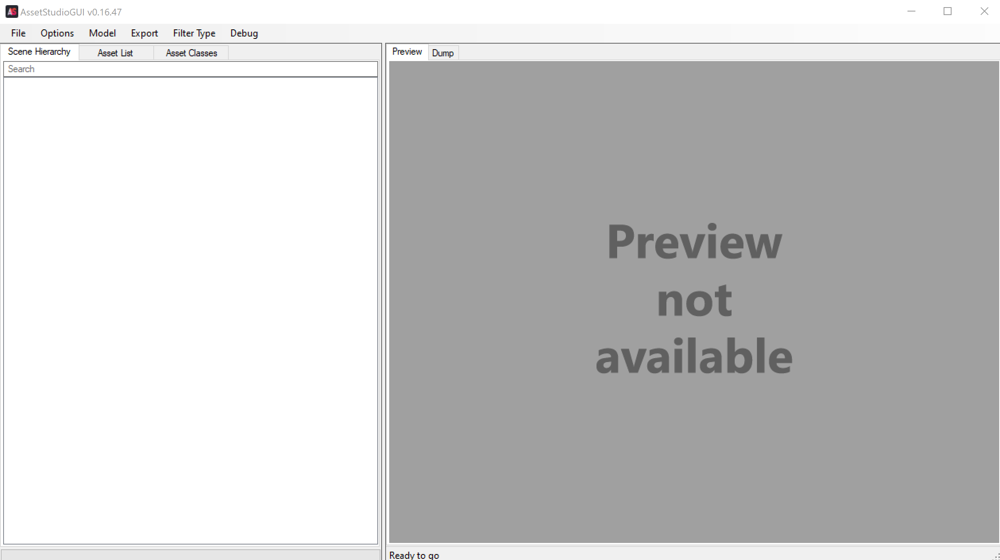
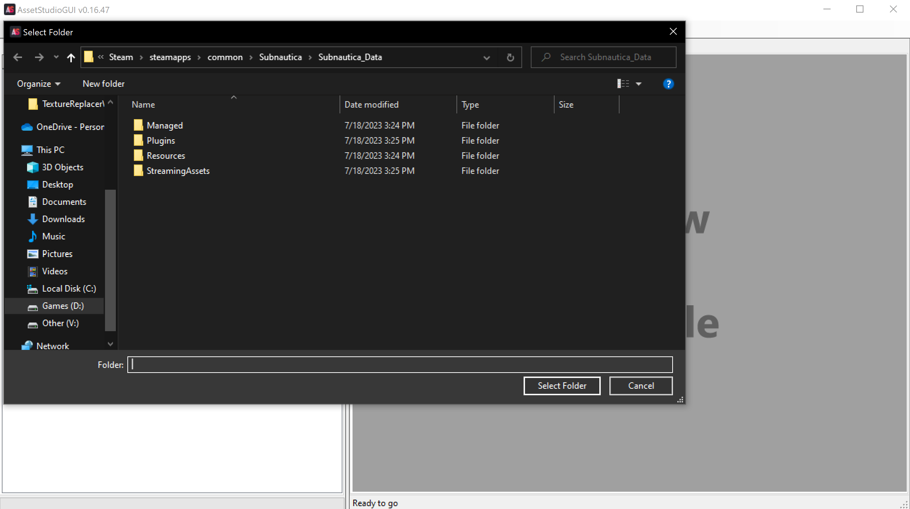
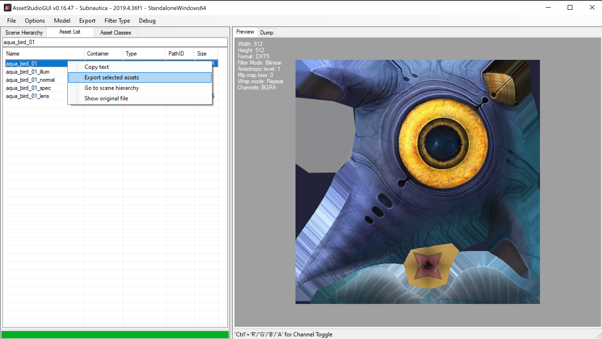

Asset Studio
The first thing you want to do is download the latest version of Asset Studio for .net472 from this link:
https://github.com/Perfare/AssetStudio/releases
Once you've downloaded it extract the zip and open AssetStudioGUI.exe
You should now see this:

Click on File in the top left, and then click load folder.
Navigate to Subnautica's file location and select the Subnautica_Data folder and click Select Folder in the bottom right.

The import process will now begin. This may take a while, and there is a bar at the bottom of the app to indicate progress
Once the import process is finished click on the Asset List tab at the top left. Here you can search for any asset in the game.
To find the "aqua_bird_01" texture search "aqua_bird_01" in the search bar.
You can also use the filter type dropdown to sort by specific file types.
Once you find the texture you want right click on it and select "Export selected assets"

Once you select the export destination you can exit the texture however you want to use in a texture config.
One thing you have to keep in mind is that you need to put all custom textures in the Assets folder in the mod folder for it to work.